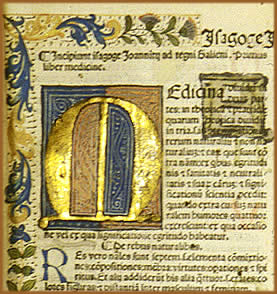
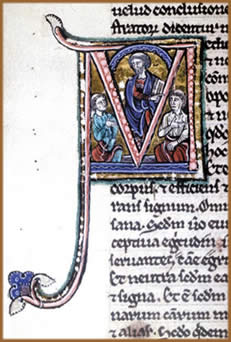

No século II d.C., surgia
uma nova forma para armazenar conhecimentos. O pergaminho era
o substituto do artifício utilizado na Antigüidade,
quando até então os textos eram escritos em folhas
de papiro. As folhas de pergaminho eram organizadas em cadernos
que, juntos ou costurados, formavam o codex. Exemplares
célebres, que chegaram ao mundo atual, são o Codex
Runicus (que tem como conteúdo a escrita rúnica)
e o Codex Argenteus (manuscrito gótico).
A busca pela comunicação eficaz determinou
a abolição de letras demasiadamente enfeitadas,
como a gótica, pois à medida que o acesso à
informação era difundido e as transações
comerciais ganhavam impulso, a escrita saía dos mosteiros
e aumentava a procura por uma caligrafia que primasse pela legibilidade.
Caligrafia e iluminura
O
trabalho de cópia dos manuscritos na Idade Média
era realizado no interior dos mosteiros, em um quarto chamado
scriptorium. Os monges encarregados deste trabalho de
cópia dos textos dividiam-se em grupos. Uns estavam encarregados
de escrever os códices (pendolistas) e outros, de iluminá-los
(minia-turistas).
Os títulos e os vários tipos de letras
eram enfeitados ao extremo. A ornamentação da escrita
era variada: podia ser antropomórfica (figuras humanas),
inspirada em figuras zoomórficas (com motivos de animais),
ou podia contar com adornos baseados na tradição
dos entrelaçados irlandeses.
A minuciosidade requerida para a elaboração
dos manuscritos foi fruto da preferência do cristianismo
pela adoção de letras distantes das empregadas na
Roma Antiga (como a versal clássica), pois esta escrita
era considerada pagã. Então, os mosteiros privilegiaram
a uncial. Nesses tempos, a caligrafia estilizada dos documentos
oficiais merovíngios, caracterizada pelo prolongamento
das letras acima e abaixo, serviu de modelo para os manuscritos
dos mosteiros.
Os textos antigos também foram deformados
porque eram grafados em diferentes tipos de escrita, sendo as
principais: a capital, da época romana; a uncial; e as
escritas nationales, como a lombárdica, a merovíngia
e a visigótica. As influências merovíngia
e anglosaxônica resultaram no advento da minúscula,
cuja variante irlandesa, com suas características formas
angulosas, foi levada à Inglaterra e ao continente pelos
frades missionários. Porém, nos séculos VIII
e IX, a escrita angulosa foi substituída pela minúscula
carolíngia (nome derivativo do imperador Carlos Magno),
caracterizada pela clareza de suas formas simples.
À medida que os manuscritos se multiplicavam,
crescia a necessidade de tornar a escrita uniformizada, a fim
de torná-la inteligível; e a minúscula carolíngia
personificava a melhor opção para atingir este objetivo.
A letra gótica, completamente distinta do modelo carolíngio,
teve origem por volta do século XI, na Bélgica e
no norte da França. No livro El Arte De La Escritura,
organizado pela UNESCO (Paris: Editora da UNESCO, 1965, p.29),
há uma comparação entre as escritas carolíngia
e gótica e as arquiteturas românica e gótica:
"Enquanto a minúscula carolíngia correspondia
à arquitetura românica, a gótica apresenta
as linhas angulosas e delgadas do estilo gótico. As curvas
se estiram e se quebram; os extremos superiores dos traços
se prolongam em espátula, finos perfis angulosos unem entre
si os traços generosos".
No século XV, os primeiros impressores
tomaram a escrita gótica como modelo, reproduzindo com
fidelidade os manuscritos e adotando, inclusive, os ornamentos
feitos pelos monges. Os miniaturistas começavam o trabalho
em imprensas, a fim de garantir os enfeites das maiúsculas,
que eram pintadas à mão ou gravadas em madeira.
Com o advento da imprensa os caracteres se dividiam
em dois grupos: os tipos angulosos, inspirados na minúscula
gótica, e os tipos arredondados ou romanos, que tinham
como modelo a minúscula carolíngia.
Ainda no século XV percebeu-se o quanto
a letra gótica, caracterizada por sua vertiginosa ornamentação,
adequava-se melhor aos manuscritos litúrgicos. Desenvolveu-se,
então, uma letra derivativa da gótica e condizente
com a simplicidade requerida pelo uso diário: a bastarda.
Entre 1450 e 1500, o uso da letra gótica
foi paulatinamente abolido do cotidiano, em decorrência
do desenvolvimento científico e comercial, e também
porque a rapidez crescente com que as correspondências eram
enviadas ocasionou um natural descuido na elaboração
desta escrita estilosa.
As corporações de copistas estavam
sobrecarregadas de trabalho e despreparadas para a nova realidade,
impulsionada pela demanda de textos reproduzidos rapidamente.
A letra gótica, caracterizada por uma escrita livresca
artística e caligraficamente executada (Textura, Fraktur
- escrita redonda -, escrita gótica), evoluiu para um tipo
que garantia maior agilidade às transações
comerciais, a chamada escrita alemã, cultivada até
o século XX.
Definitivamente,
escrever à mão sobre pergaminhos era um procedimento
muito lento, em nada condizente com os novos tempos. O papel,
vindo da China por intermédio dos árabes, substituiu
o pergaminho por ser muito menos custoso e assim também
contribuiu para instaurar a crise entre os copistas. Todavia,
ainda no século XVII, eram impressos livros em pergaminho
para leitores exigentes.
Posteriormente, as manifestações
artísticas do Barroco perceberam na escrita gótica
um modo excelente para encher as maiúsculas de arabescos.
Nos tipos de imprensa, esta letra vai perdendo espaço,
mas entre os calígrafos é praticada com um imenso
prazer, pois permite a revelação da virtuosidade
desses artistas.
Os tipos angulosos predominaram ao norte dos Alpes,
enquanto na Itália foram mais utilizados os caracteres
góticos mais arredondados, chamados de escrita gótica
redonda, caracterizada pela já mencionada Fraktur.
A gótica redonda caracteriza-se pelo aspecto quebrado dos
traços, pela inclinação das minúsculas,
pela prolongação de certos traços altos,
pela acentuação mais ou menos pronunciada dos traços
baixos e pela "tromba de elefante" das iniciais.
Já no século XVI, os humanistas optaram
por escrever os livros de autores clássicos, que eram novamente
descobertos, com caracteres derivados da minúscula carolíngia.
Ao contrário dos caracteres góticos, com seus traços
dinâmicos e duros, os caracteres romanos permitiam a construção
geométrica e uma análise racional.
A profissão de caligrafista
foi devidamente reconhecida até fins do século XVIII.
As atas e documentos oficiais seguiram utilizando a letra gótica
até o início do século XIX. No século
XX esta escrita foi cada vez menos utilizada, dando espaço
à latina, com formas claras, que ocupam menos espaço
no papel.
Texto original
de Carla Damasceno
Extraído
e adaptado de www.carcasse.com